フロントエンド
画面。HTML / CSS / JavaScript
DEPLOY / CHOOSE / WEB
デプロイとは、作ったプログラムを使えるようにすること。
Webアプリに関して言えば、インターネットで使えるように公開することです。

00 / ウェブアプリとは何か
ウェブアプリは、ブラウザー上で入力・選択・送信などをして、目的の作業を行う仕組みです。たとえば、予約する、投稿する、写真を共有する。情報を読むだけでなく、操作に応じた結果を受け取れることに注目してみましょう。
例：画像付きの掲示板
文章を入力して写真を選び、「投稿する」を押すと、投稿が保存されて画面に表示される。他の人もその投稿を見ることができます。
子どもたちがユーザーです。舞台を見たり「次はこの人形が見たい」とお願いしたりする場面を、ウェブアプリを使う場面に重ねてみます。
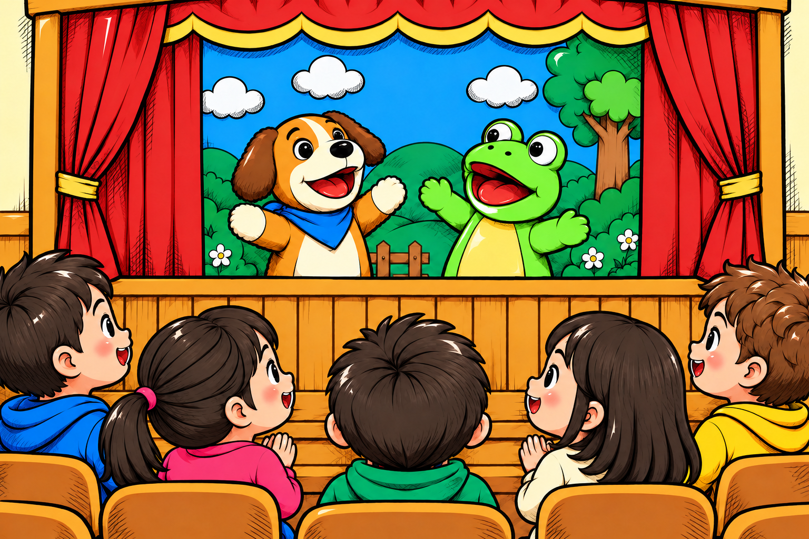
子どもたちに見える人形や背景が、画面のたとえです。Webでは、ブラウザーに表示される文章・画像・ボタン・入力欄などがあたります。
HTMLで構造を作り、CSSで見た目を整え、JavaScriptで操作や動き・通信を扱います。
裏方が必要な情報を調べ、準備して、舞台へ渡す役割のたとえです。Webでは、サーバー上のプログラムが入力を確かめたり、データを保存・検索したりして、結果を返します。
この舞台裏を、次の3つの役割に分けてみましょう。
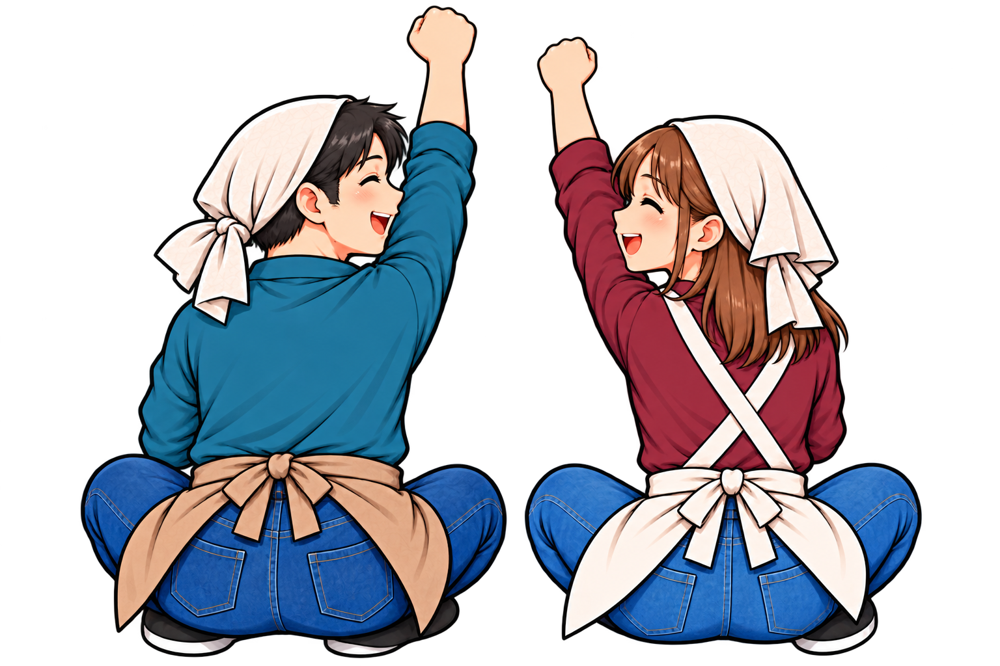
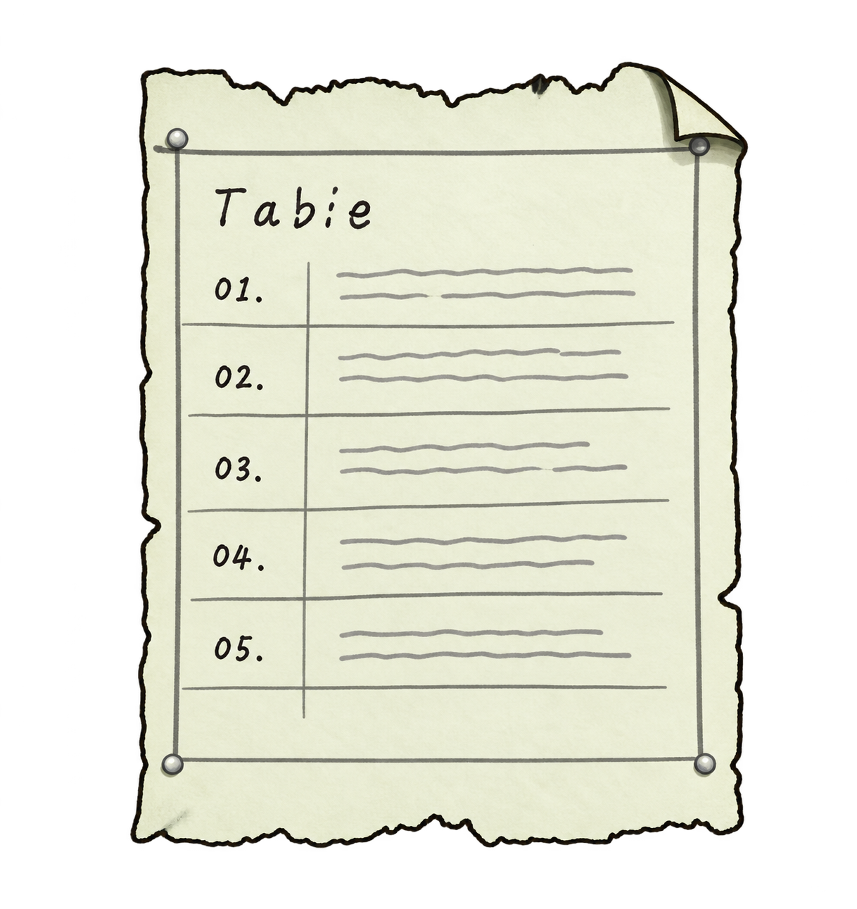
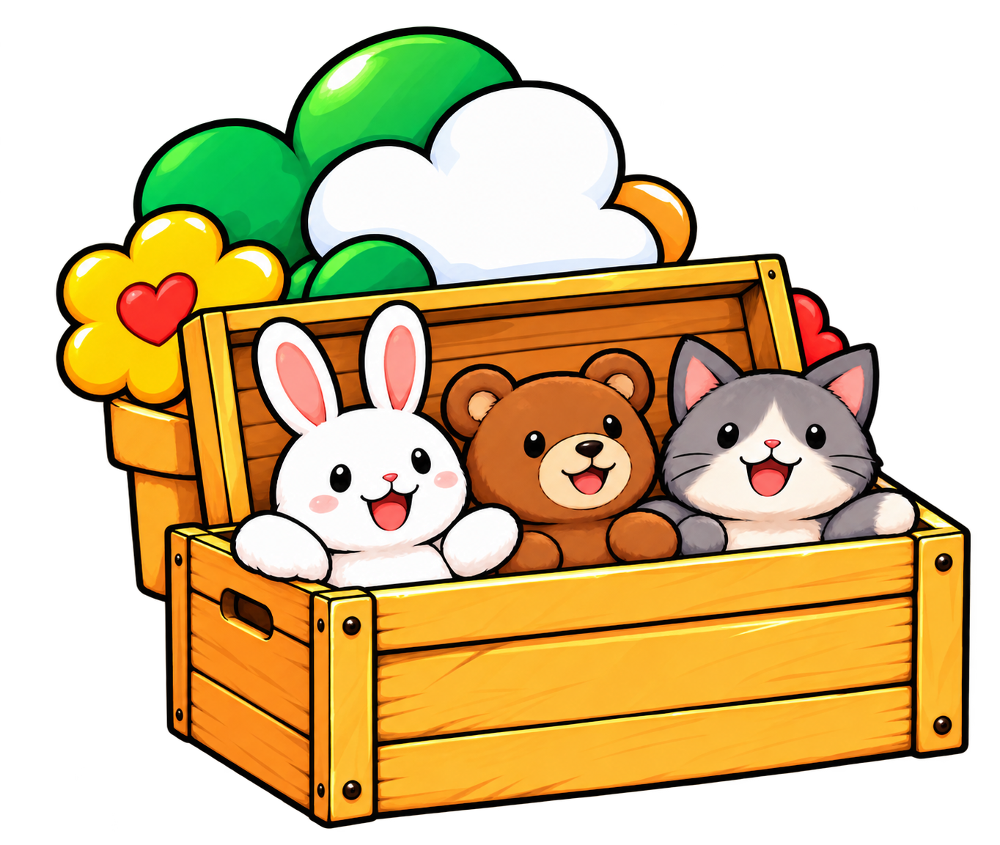
たとえとしての補足：一覧表の記録内容は、説明のために補った例です。また、実際にはデータベース自体もストレージ上に保存されます。「整理された情報」と「素材ファイル」の役割を分けて考えるためのたとえです。
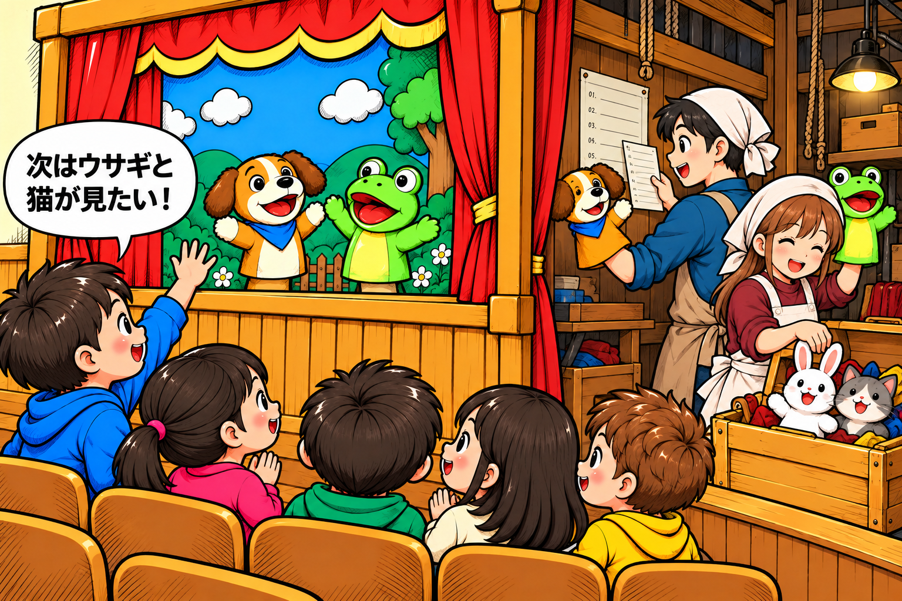
「次はウサギと猫が見たい！」。Webなら、画面で選択し「表示」ボタンを押す場面です。フロントエンドが、必要な内容をバックエンドへ送ります。
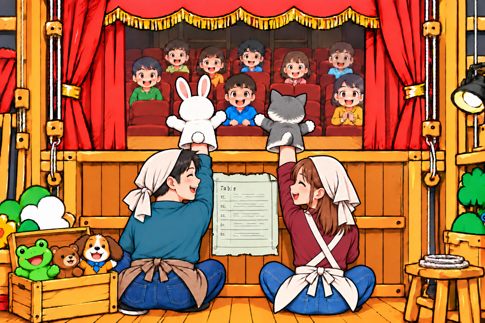
裏方が調べて準備し、ウサギと猫が登場します。Webでは、バックエンドが返した結果を使い、フロントエンドが画面を表示・更新します。
掲示板でも、同じような流れになります。
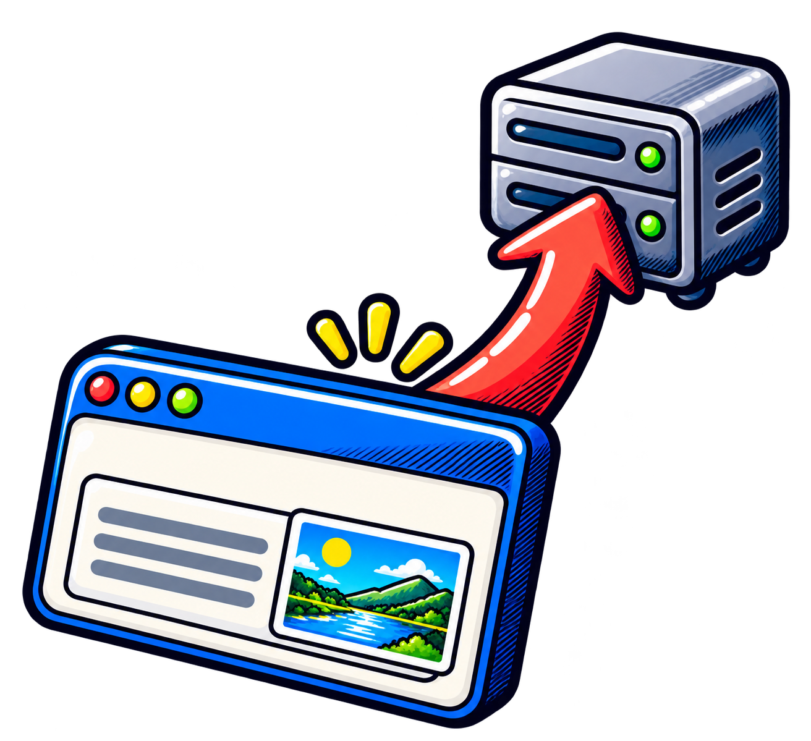
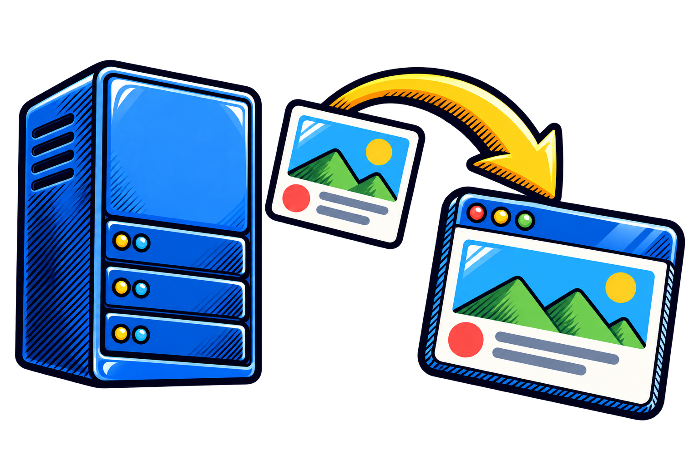
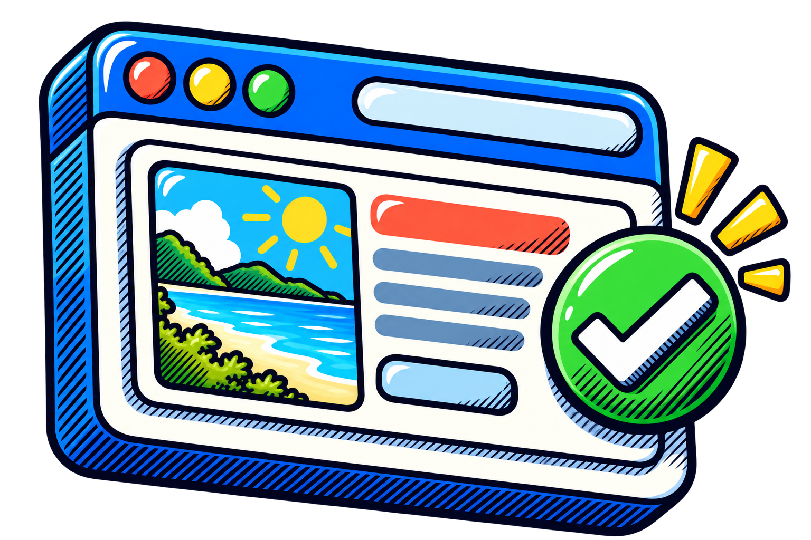
「フロントエンド＝動きがない」ではありません。ブラウザー側でもJavaScriptで画面を動かせます。違いは、主にブラウザーで表示・操作を扱うか、サーバーで処理・データを扱うかです。計算ツールなど、ブラウザー内の処理だけで使えるアプリもあり、すべてにバックエンドやDBが必要なわけではありません。
画面のファイルだけでなく、必要ならプログラムを動かす場所、データベース、ファイルの保管場所も用意し、つなぐ必要があります。この「必要な部品を、使える場所へ配置して動かす」話が、次のデプロイです。
デプロイの説明へ ↓仕組みの参考：MDN：Client-server overview（確認日：2026-10-21）。挿絵は学習用の比喩です。
01 / デプロイとは？
デプロイとは、パソコンの中だけで動く制作物を、URLから誰でも（または許可した人だけが）使える状態にすることです。画面だけ公開できても、必要な部品がなければアプリは動きません。
画面。HTML / CSS / JavaScript
API、認証、メール、権限制御
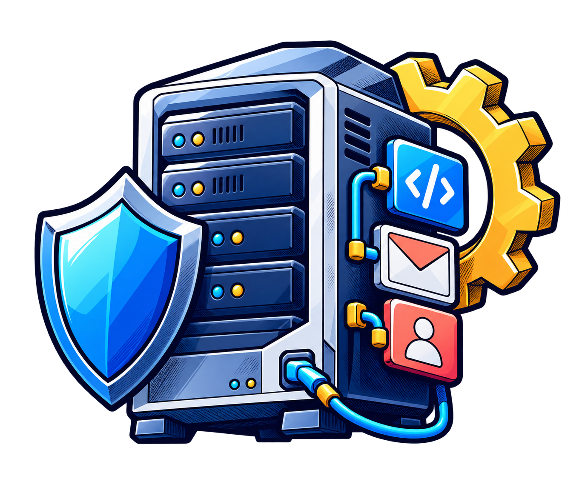
ユーザー、投稿、履歴、設定
画像、動画、PDF、添付
選ぶ基準：特に重要なのは「バックエンドで何を実行したいか」です。既存PHP、JavaScript/TypeScriptのAPI、常駐Node.jsでは向く場所が変わります。
02 / デプロイ先の候補
デプロイ先は、作ったものをインターネット上に置く場所です。サービスによって、画面の公開が得意なもの、ログインやデータ保存まで用意されているもの、自由にプログラムを動かせるものがあります。
世界中へページを届けるのが得意。画面の公開から、小さなサーバー処理まで広げられます。
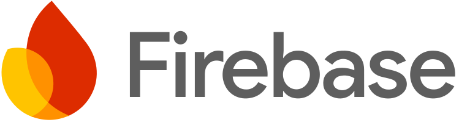
アプリの裏側の部品セット。ログイン、データ保存、ファイル保管などを組み合わせやすい場所です。
GitHubとつないで公開しやすい場所。Webアプリの画面を作る人によく使われます。
サーバーで動くプログラムを置きやすい場所。Node.jsやPython、PHPなどのアプリにも使えます。
データを扱うための道具箱。データベース、ログイン、ファイル保管、リアルタイム通信をまとめて使えます。
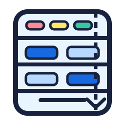
自分用の小さなコンピューターを借りる方法。自由度は高いですが、設定・更新・安全対策も自分で担当します。
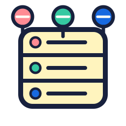
準備されたWeb用スペースを借りる方法。WordPressやPHPを使いたいときの、身近な選択肢です。
大切なのは名前を暗記することではありません。「画面を公開したい」「ログインやデータ保存も必要」「今あるPHPを使いたい」のように、やりたいことから候補をしぼります。
03 / 目的に応じたデプロイ先
まずは「何を作りたいか」を考えます。下の表は最初の候補です。実際には、料金・公開範囲・使う言語なども公式サイトで確認しましょう。
| やりたいこと | まず考える部品 | 最初に見る候補 |
|---|---|---|
| 作品紹介や学校紹介のページを公開したい | 画面を置く場所 | Cloudflare、Vercel、Firebase Hosting、共有サーバー |
| WordPressや今あるPHPのページをそのまま使いたい | PHPを動かせる場所 | 共有サーバー、VPS、Render |
| ログイン付きの掲示板や写真共有を作りたい | 画面 + ログイン + データ保存 | Firebase、Supabase。画面の公開先はCloudflareやVercelと組み合わせることもあります。 |
| JavaScriptで作った画面と、小さなAPIを公開したい | 画面 + サーバー処理 | Cloudflare、Vercel |
| Node.jsやPythonのプログラムを、サーバーで動かし続けたい | 動き続けるサーバープログラム | Render、VPS |
迷ったら、まず小さく公開してみよう。画面だけならCloudflareやVercel、データやログインが必要ならFirebaseやSupabase、既存PHPなら共有サーバーという順で考えると整理しやすくなります。
04 / ウェブアプリのデプロイのやり方
05 / リアルタイム空間の考え方
現在座標や接続中ユーザーは、毎回DBへ保存せず、WebSocketやRealtimeで一時的に配信します。チャット履歴やプロフィールはDBに保存します。位置更新は毎秒2〜4回程度に間引き、ブラウザ側で補間します。
二つの第一候補：部屋の状態を主役にするなら「Cloudflare Pages + Workers + Durable Objects + D1」。ログイン・プロフィール・検索などSQLデータを主役にするなら「Cloudflare Pages + Supabase」です。
SOURCES / CHECKED 2026-10-23
料金・無料枠・対応する言語・上限は変わるため、公開直前に公式ページで再確認してください。